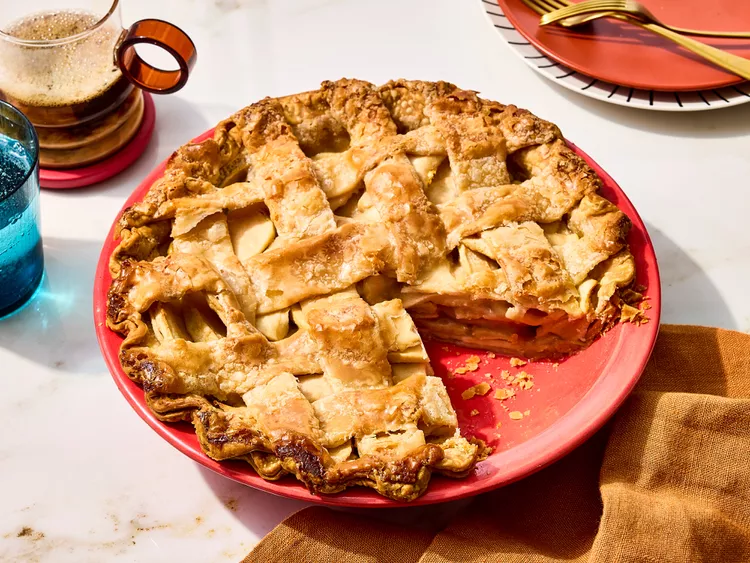

An apple pie is a baked fruit dessert with a sweet, spiced apple filling encased in a flaky, buttery pastry crust. It features tender sliced apples flavored with cinnamon, nutmeg, and sugar, usually baked in a round pan with a top and bottom